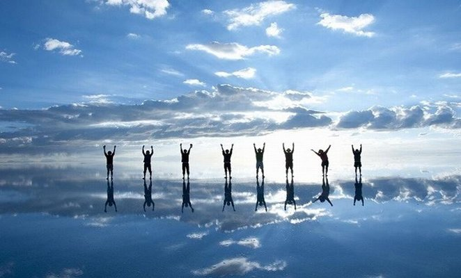
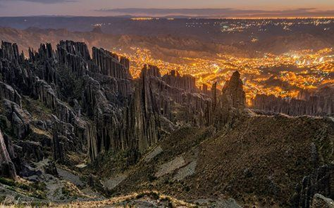
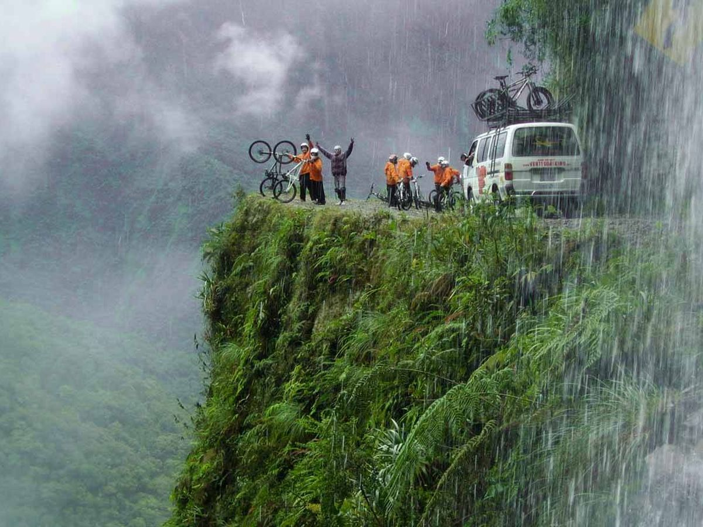
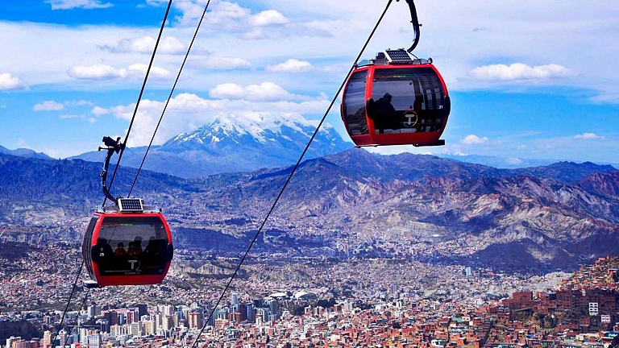
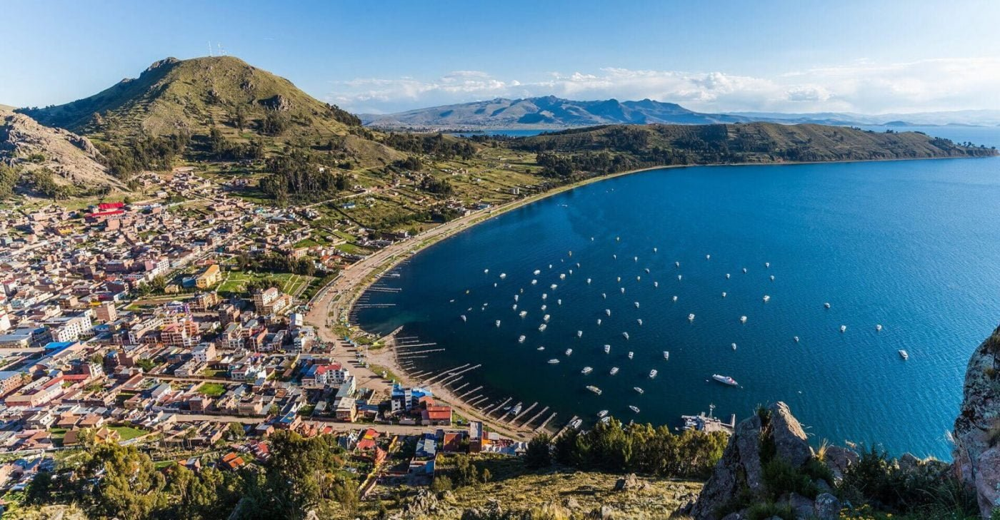

1. Uyuni – Espejo Natural Más Grande del Mundo  2. Valle de las Ánimas – Nuevo destino Top, en tendencia  3. El camino de la muerte: el camino más peligroso del mundo  4. Teleféricos en La Paz  5. Isla de Sol, Atrás en el tiempo en el Lago Titicaca 
Go somewhere